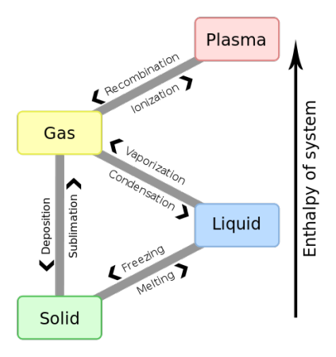

In my attempt to push puppet to its limits, (for no particular reason), to develop more powerful puppet modules, to build in a distributed lock manager, and to be more dynamic, I’m now attempting to build a Finite State Machine (FSM) in puppet.
Is this a real finite state machine, and why would you do this?
Computer science professionals might not approve of the purity level, but they will hopefully appreciate the hack value. I’ve done this to illustrate a state transition technique that will be necessary in a module that I am writing.
Can we have an example?
Sure! I’ve decided to model thermodynamic phase transitions. Here’s what we’re building:
|  |
How does it work?
Start off with a given define that accepts an argument. It could have one argument, or many, and be of whichever type you like, such as an integer, or even a more complicated list type. To keep the example simple, let’s work with a single argument named $input.
define fsm::transition(
$input = ''
) {
# TODO: add amazing code here...
}The FSM runs as follows: On first execution, the $input value is saved to a local file by means of a puppet exec type. A corresponding fact exists to read from that file and create a unique variable for the fsm::transition type. Let’s call that variable $last. This is the special part!
# ruby fact to pull in the data from the state file
found = {}
Dir.glob(transition_dir+'*').each do |d|
n = File.basename(d) # should be the fsm::transition name
if n.length > 0 and regexp.match(n)
f = d.gsub(/\/$/, '')+'/state' # full file path
if File.exists?(f)
# TODO: future versions should unpickle (but with yaml)
v = File.open(f, 'r').read.strip # read into str
if v.length > 0 and regexp.match(v)
found[n] = v
end
end
end
end
found.keys.each do |x|
Facter.add('fsm_transition_'+x) do
#confine :operatingsystem => %w{CentOS, RedHat, Fedora}
setcode {
found[x]
}
end
endOn subsequent runs, the process gets more interesting: The $input value and the $last value are used to decide what to run. They can be different because the user might have changed the $input value. Logic trees then decide what actions you’d like to perform. This lets us compare the previous state to the new desired state, and as a result, be more intelligent about which actions need to run for a successful state transition. This is the FSM part.
# logic tree modeling phase transitions
# https://en.wikipedia.org/wiki/Phase_transition
$transition = "${valid_last}" ? {
'solid' => "${valid_input}" ? {
'solid' => true,
'liquid' => 'melting',
'gas' => 'sublimation',
'plasma' => false,
default => '',
},
'liquid' => "${valid_input}" ? {
'solid' => 'freezing',
'liquid' => true,
'gas' => 'vaporization',
'plasma' => false,
default => '',
},
'gas' => "${valid_input}" ? {
'solid' => 'deposition',
'liquid' => 'condensation',
'gas' => true,
'plasma' => 'ionization',
default => '',
},
'plasma' => "${valid_input}" ? {
'solid' => false,
'liquid' => false,
'gas' => 'recombination',
'plasma' => true,
default => '',
},
default => '',
}Once the state transition actions have completed successfully, the exec must store the $input value in the local file for future use as the unique $last fact for the next puppet run. If there are errors during state transition execution, you may choose to not store the updated value (to cause a re-run) and/or to add an error condition fact that the subsequent puppet run will have to read in and handle accordingly. This is the important part.
$f = "${vardir}/transition/${name}/state"
$diff = "/usr/bin/test '${valid_input}' != '${valid_last}'"
# TODO: future versions should pickle (but with yaml)
exec { "/bin/echo '${valid_input}' > '${f}'":
logoutput => on_failure,
onlyif => "/usr/bin/test ! -e '${f}' || ${diff}",
require => File["${vardir}/"],
alias => "fsm-transition-${name}",
}It might be beneficial to remember the path we took through our graph. To do this, on each transition we append the new state to a file on our local puppet client. The corresponding fact, is similar to the $last fact, except it maintains a list of values instead of just one. There is a max length variable that can be used to avoid storing unlimited old states.
Does this have a practical use?
Yes, absolutely! I realized that something like this could be useful for puppet-gluster. Stay tuned for more patches.
Hopefully you enjoyed this. By following the above guidelines, you should now have some extra tricks for building state transitions into your puppet modules. Let me know if you found this hack awesome and unique.
I’ve posted the full example module here.
Happy Hacking,
James
You can hire James and his team at m9rx corporation.
You can follow James on Mastodon for more frequent updates and other random thoughts.
You can follow James on Twitter for more frequent updates and other random thoughts.
You can support James on GitHub if you'd like to help sustain this kind of content.
You can support James on Patreon if you'd like to help sustain this kind of content.
Your comment has been submitted and will be published if it gets approved.
Click here to see the patch you generated.
{kind=link}
Comments
Nothing yet.
Post a comment